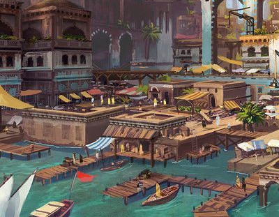
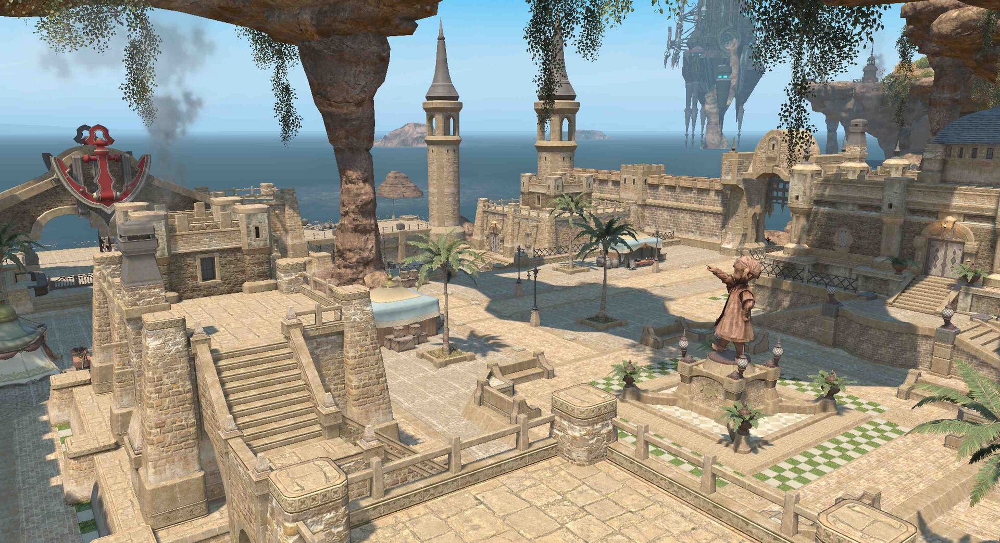
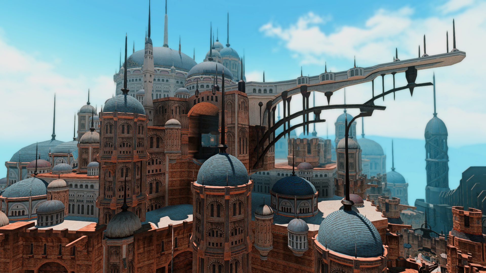
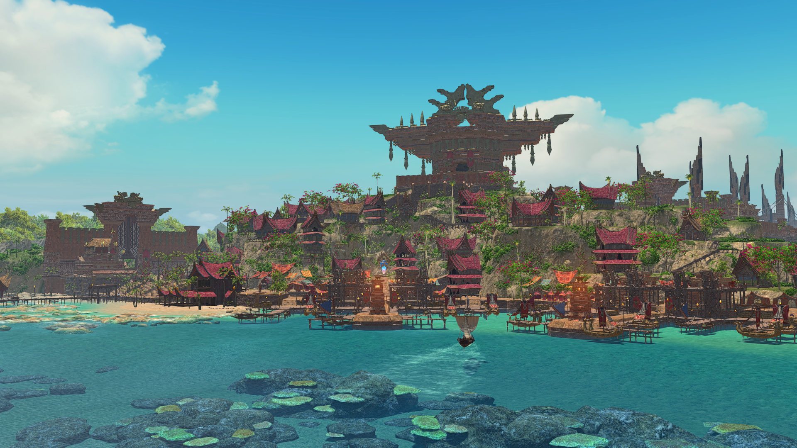

ThavnairRéseau historique
Une compagnie marchande itinérante née sur les routes du Paglth'an, reliant communautés, comptoirs et horizons lointains au gré des cargaisons et des rencontres.
Les Caravaniers du Soleil ne forment pas une troupe figée. Autour d'un noyau stable qui assure la continuité de la compagnie, des escortes, négociants, conducteurs, manutentionnaires ou marins peuvent être engagés selon les besoins d'un trajet ou d'un cycle complet.
Les chariots restent le visage le plus reconnaissable de la compagnie sur terre : ils servent autant au transport qu'au commerce itinérant et deviennent, au fil des étapes, boutique, réserve et point de rassemblement. La composition du convoi, elle, varie selon la route, la cargaison et les personnes disponibles.
Dha'Yuz reste le point d'ancrage historique, mais les marchandises circulent désormais par plusieurs routes. Soleil-de-Nuit n'accompagne pas nécessairement chaque cargaison : son réseau permet aux biens de voyager jusqu'aux relais où les Caravaniers les récupèrent.

Villages, oasis, marchés et comptoirs jalonnent le cycle terrestre.
La caravane y circule, plutôt que de suivre une seule étape fixe.



Baie de Dha'Yuz → villages et comptoirs du Thanalan → Baie des Vêpres → Ul'dah → Thanalan → Baie de Dha'Yuz.
Thavnair ⇄ Baie de Dha'Yuz : environ 1 mois de traversée en mer.
Baie des Vêpres ⇄ Limsa Lominsa ⇄ Tural : la traversée entre Limsa Lominsa et le Tural dure environ 2 mois en mer.
Ces durées correspondent uniquement au temps passé en mer et n'incluent ni les escales, ni les attentes, ni les chargements, ni les trajets terrestres.
Les Caravaniers ne s'appuient pas uniquement sur leurs chariots : leur activité repose sur des points de relais, des escales parfois prolongées et des partenaires auprès desquels les marchandises peuvent être échangées, stockées ou réorientées. Les longues traversées maritimes imposent un fonctionnement par arrivages plutôt qu'un flux continu.
Si les Caravaniers du Soleil passent une grande partie de leur temps sur les routes, la compagnie dispose de quelques points d'ancrage permanents. De tailles et de fonctions différentes, ces lieux permettent d'organiser les voyages, d'accueillir les membres de passage, de travailler certaines marchandises ou simplement d'attendre l'arrivée d'un convoi. Ils ne constituent pas un siège unique, mais un petit réseau d'implantations adaptées aux besoins de la compagnie.
Dha'Yuz constitue le principal point d'ancrage organisationnel des Caravaniers. Soleil-de-Nuit y possède un petit logement qui abrite également son atelier personnel de lapidairerie et le bureau depuis lequel elle gère une grande partie des affaires de la compagnie.
L'espace étant modeste, il n'a pas vocation à accueillir les stocks importants : des zones de stockage sont louées séparément lorsque cela est nécessaire. La présence régulière d'Imesh à Dha'Yuz, qu'ils y viennent eux-mêmes ou y envoient des émissaires, en fait également un lieu privilégié pour les échanges entre la tribu et les Caravaniers.
Lieu RP : Dha'Yuz
Accès HRP : Sagittarius · La Coupe · Secteur 28 · Parcelle 19 · Chambre 01
Aux abords d'Ul'dah, les Caravaniers disposent de leur installation la plus importante. Ce véritable relais sert à la fois de dépôt et de lieu de vente lors des passages de la compagnie dans la région. Un dortoir et un espace de repos permettent également d'y accueillir les Caravaniers et travailleurs durant leur séjour.
Un petit atelier complète les lieux. Les artisans accompagnant la caravane peuvent ainsi y travailler certaines matières acquises au cours du voyage avant leur mise en vente, transformant par exemple une ressource brute en produit ouvragé de plus grande valeur.
Lieu RP : La Coupe, aux abords d'Ul'dah
Accès HRP : Sagittarius · La Coupe · Secteur 28 · Parcelle 19
À la Baie des Vêpres, la compagnie dispose d'un appartement plus modeste faisant office de bureau, de dortoir et de lieu de repos. Il accueille notamment les Caravaniers amenés à demeurer sur place dans l'attente de marchandises ou d'un prochain départ.
Cette fonction prend toute son importance pour les cargaisons en provenance du Tural : après la longue traversée jusqu'à Limsa Lominsa, celles-ci doivent encore rejoindre la Baie des Vêpres avant de pouvoir poursuivre leur route sur le réseau terrestre des Caravaniers.
Lieu RP : Baie des Vêpres
Accès HRP : Sagittarius · La Coupe · Secteur 28 · Parcelle 19 · Chambre 02
Ul'dah constitue également un nœud commercial majeur. Les accords entretenus avec la Guilde des Orfèvres et Amajina & Fils donnent lieu à des trocs et des échanges, tandis que la cité reste l'un des principaux débouchés pour les marchandises du réseau.
Près d'une année passée comme Main-Feu auprès des Mobelins a permis à Soleil-de-Nuit d'ouvrir de nouveaux échanges, dont un accord avec le Bazar aux Mille Perles.
Soleil-de-Nuit entretient des accords avec plusieurs producteurs locaux de fils de soie. Elle bénéficie également de tarifs avantageux auprès de la Soierie de Ruveydah, réputée comme la meilleure de Thavnair, lui permettant d'acquérir ponctuellement des rouleaux de tissu à des conditions particulièrement intéressantes. Les quantités accessibles par ce biais restent cependant limitées.
Les cargaisons se composent au fil des étapes : certaines ressources sont confiées à la compagnie, d'autres sont achetées, troquées ou revendues plus loin. Plus qu'un catalogue fixe, les Caravaniers entretiennent ainsi un cycle d'échanges qui transforme les productions d'une région en ressources utiles ailleurs.
Une partie du réseau commence avec les ressources confiées par la tribu. Elles ne sont pas achetées par la compagnie : elles constituent une forme d'investissement dans les Caravaniers.
Pierres précieuses et semi-précieuses, métaux, cuirs de draconides, pièces de joaillerie et produits de la chasse.
Une part des revenus et des échanges sert à acquérir les biens dont la tribu a besoin.
Autour de Dha'Yuz : les Caravaniers achètent également du sel et des tissus auprès de tisserands thanalais.
Soieries · Épices
Obtenues contre des gils ou en échange de pièces travaillées par Soleil-de-Nuit et d'autres lapidaires imesh.
Épices · Café · Tissus pelupelu · Laine d'alpaga
Le troc y tient une place importante : tissus thavnairois et métaux imesh servent régulièrement d'échange, avec des gils au besoin.
Ventes → Gils
La compagnie y vend une part importante de ses marchandises. Ces revenus rémunèrent les employés, couvrent les frais et participent aux achats destinés aux Imesh.
Tissus courants · Sel · Épices
Ces produits trouvent plus facilement preneur que les biens rares ou raffinés. En retour circulent gils, spécialités locales et parfois des objets inhabituels — héritages, vaisselle fine ou autres biens rares appelés à repartir sur le réseau.
Quelques figures assurent la continuité de la compagnie, tandis que d'autres rejoignent ses routes pour un cycle, une traversée ou une mission particulière.
Les Caravaniers peuvent servir de point d'entrée à de nombreuses scènes : voyageurs, artisans, clients ou partenaires peuvent croiser leur route, tandis que des gardes, marins, conducteurs, manutentionnaires ou marchands peuvent être engagés pour un trajet ou un cycle particulier. Cette section rassemble les informations pratiques pour organiser ces rencontres et distinguer ce qui relève des informations publiques RP de ce qui est destiné aux joueurs.
La galerie d'images est volontairement séparée afin de garder cette page principale légère.